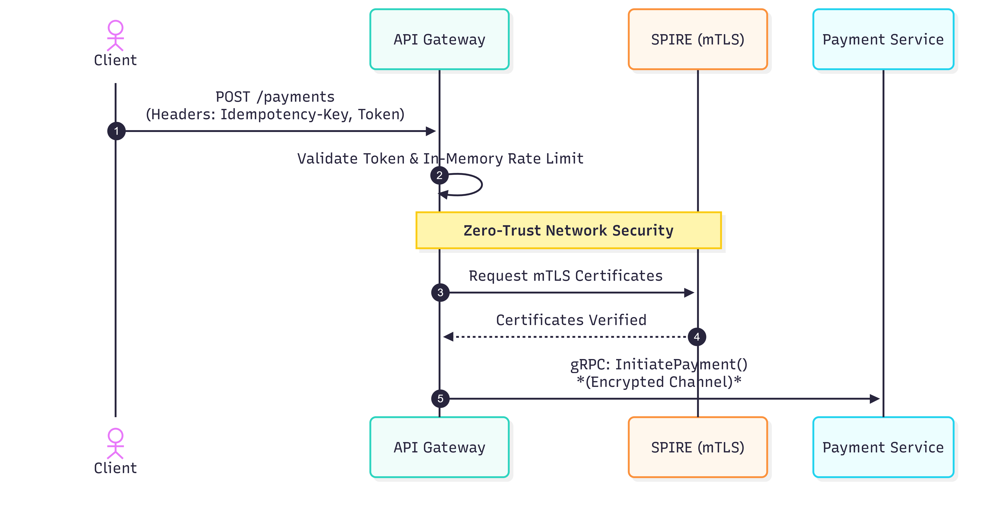
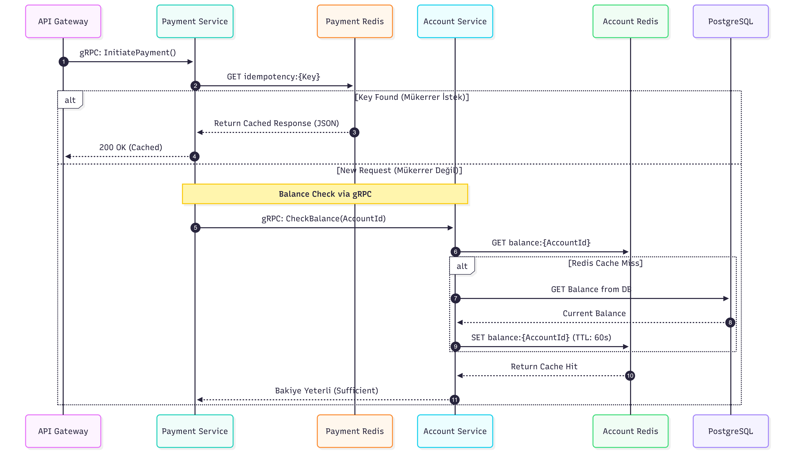
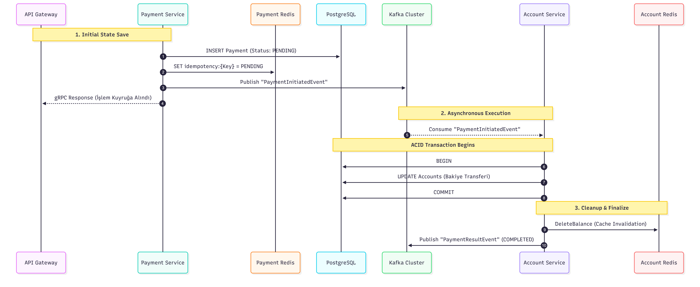

Securepay project is a basic simulation of how to create a reliable, scalable and maintainable system from my perspective. I decided to publish a blog about what I've learned from this project.
Before explaining my perspective and the toolkit I've used, I want to share the resources I've constantly checked while I created this project.
-
Designing a Payment System by Pragmatic Engineer:
https://newsletter.pragmaticengineer.com/p/designing-a-payment-system
This is very cool and explanatory blog. I usually read this blog to contemplate what kind of architectural decision i should take. -
Mastering Terraform by Tinderholt Mark:
This book is very clear and helpful if you want to use Terraform as an infrastructure as code. -
Postgresql Internals by Egor Rogov:
I read this book not just for this project, also i am so curious about PostgreSQL's architecture and how it works. -
https://zerotohero.dev/go/
This website has excellent articles about Go programming and best practices.
The Perspective and Architectural Decisions:
Before creating a new project or adding a new feature, i ask myself these questions:
- What problem do you want to solve? (In this case, you should find a problem before attempting to solve it.)
- What is the average expectation when you solve this problem?
- For this project/feature, what's your decision in CAP theorem? Your new implementation requires Consistency and Partition Tolarence or other combinations?
- Did you clarify trade-offs when you choose toolkit do you want to use? Or you just use this toolkit just for "using" them.
Around these critical questions, I've decided to go with:
- I want to create a project that simulates a virtual wallet functionality and want to establish a secure, scalable and reliable environment.
- The average expectation is highly fault-tolarent and strong consistency and strict idempotency. So, we should focus on Consistency and Partition Tolarence in this case.
- I use PostgreSQL to ensure consistency via ACID properties. A transaction is treated as an atomic unit; either the entire operation succeeds, or it fails completely. Additionally, I prioritize isolation levels to prevent race conditions.
- I use Kafka for asynchronous communication. Implementing a Dead Letter Queue (DLQ) and a retry mechanism is crucial for providing fault tolerance.
- I am implement a Zero-Trust architecture where every internal service is responsible for its own security. Every request between internal services is authenticated and encrypted via mutual TLS (mTLS) communication. I also leverage SPIFFE/SPIRE as the control plane to manage service identities and automate certificate issuance.
- I leverage Redis as a distributed caching layer to reduce latency and improve system performance.
- I use Prometheus and Grafana, a powerful open-source duo for monitoring system health and performance. Additionally, I integrated OpenTelemetry to achieve full observability through distributed tracing and metrics collection.
- I use gRPC for inter-service communication to leverage type safety and high performance, taking full advantage of HTTP/2 features such as multiplexing and binary framing.
- I use Kubernetes to orchestrate my microservices, ensuring high availability, automated scaling, and seamless deployment across the system.
High Level Architecture
In the following section, I outline the high-level architecture by tracing the lifecycle of a 'load money' request. I've broken down the process into three sequential phases to illustrate how the system ensures security, consistency, and reliability.



Deep Dive: Implementation Details
1. Financial Integrity: Idempotency & ACID Transactions
a. The First Shield: Redis Idempotency-Key
Imagine a user clicks the "Pay" button, but due to a slow network, they don't get an immediate response and click "Retry." This results in the same request hitting the backend twice. To prevent duplicate transactions, I implemented the following:
- Unique Keys: The
Payment Serviceexpects a uniqueIdempotency-Key(e.g., a UUID) for everyInitiatePaymentrequest. - Early Validation: As soon as a request arrives via gRPC, and before triggering any business logic or database queries, the service checks Redis using
GET idempotency:{key}. - Cached Response: If the key already exists in Redis, the system recognizes that this request was already processed (or is currently
PENDING). Instead of re-running the transaction, it immediately returns the previously cached JSON response. - The Result: This approach protects our database from redundant heavy operations and fundamentally prevents duplicate charges.
b. The Core Truth: PostgreSQL Transactions & "FOR UPDATE" Locking
While Idempotency protects the gateway, I handled Race Condition risks at the database level using PostgreSQL's locking mechanisms.
Consider a scenario where two different payment requests for the same account arrive at the exact same millisecond, both trying to spend the last $100. If both read the balance simultaneously and see $100, they might both approve the transaction, leading to a balance error. In the Account Service, I solved this within the ProcessPayment() function:
- ACID Transactions: Every operation starts with
db.BeginTx(). If any asynchronous error occurs, the entire process is rolled back, ensuring data integrity. - Pessimistic Locking: Instead of a standard
SELECTto check the balance, I use:SELECT balance FROM accounts.balances WHERE account_id = $1 FOR UPDATE; - How it works: The
FOR UPDATEclause tells PostgreSQL, "I am going to update this row; do not let anyone else read or modify it until I COMMIT." This creates a Row-Level Lock. Any concurrent request for the same account must wait until the first transaction finishes. This effectively eliminates the Lost Update race condition. - Hybrid Integrity: Finally, I use Optimistic Versioning by incrementing a version column (
UPDATE ... SET version = version + 1). This provides an extra layer of auditability and ensures a hybrid approach to data consistency.
2. Resilience: Handling Failures with Kafka & DLQ
Traditional synchronous architectures (e.g., REST/gRPC chains) suffer from cascading failures: if the Account Service goes down, the Payment Service fails too. To create a highly resilient system, I relied on Apache Kafka to decouple operations and introduce fault tolerance.
a. Asynchronous Decoupling & The Saga Pattern
When a user initiates a payment, the Payment Service doesn't wait for the Account Service to finish the database transaction. Instead:
- It persists the payment state as
PENDING. - It publishes a
PaymentInitiatedEventto Kafka and immediately returns a200 OKto the user. - Why this matters: If the
Account Serviceis temporarily down or overwhelmed by a traffic spike, the system doesn't drop the user's request. Kafka acts as a shock absorber, buffering the events. Once theAccount Servicerecovers, it resumes reading from its last committed offset, eventually processing all backlogged payments. - Graceful Failures: If a business rule fails (e.g., insufficient funds), the Consumer doesn't crash. It simply publishes a
PaymentResultEventwith aFAILEDstatus back to Kafka, completing our Choreography-based Saga Pattern.
b. Catching the Unpredictable: The Dead Letter Queue (DLQ)
While business errors are handled gracefully via events, infrastructure errors (e.g., Database connection lost) or malformed payloads ("poison pills") pose a different threat. If a consumer fails to process a message:
- We cannot infinitely retry the same message, as it would block the entire Kafka partition (head-of-line blocking).
- We cannot simply skip and
committhe message, as that would result in silent data loss (a critical failure in FinTech).
To solve this, the architecture dictates a Dead Letter Queue (DLQ) routing mechanism. If a message repeatedly fails to process after $N$ retries (due to unmarshaling errors or persistent DB timeouts), the consumer acknowledges the message but routes it to a designated payment.dlq topic.
This DLQ acts as a quarantine zone. It triggers a Prometheus/Grafana alert, allowing engineers to manually inspect the corrupted payload, fix the underlying bug, and then replay the messages from the DLQ without affecting the real-time payment pipeline.
3. Identity over Network: Zero-Trust & SPIFFE/SPIRE
Traditional microservice architectures often rely on "perimeter security" (the castle-and-moat model). Once a request passes the API Gateway or firewall, internal services implicitly trust each other just because they share the same private subnet. In a modern FinTech environment, this is a dangerous assumption; if an attacker compromises a single minor component, they gain unfettered lateral movement across the entire network.
To combat this, I designed SecurePay around a strict Zero-Trust Architecture. In this model, the network is always assumed to be hostile, and IP addresses are not treated as valid forms of identity.
a. Workload Identity with SPIFFE & SPIRE
Instead of relying on network boundaries, every single microservice in SecurePay is issued a unique cryptographic identity using the SPIFFE (Secure Production Identity Framework for Everyone) standard.
I deployed SPIRE as the control plane to manage these identities. When a service (e.g., Payment Service) boots up in Kubernetes, a local SPIRE Agent node verifies its authenticity (checking its Kubernetes Service Account, namespace, and binary digest) and issues it a short-lived X.509 SVID (SPIFFE Verifiable Identity Document).
b. Mutual TLS (mTLS) for Inter-Service Communication
With these cryptographic identities in place, absolutely no plaintext HTTP traffic is allowed between internal services. All synchronous inter-service communication (such as the API Gateway calling the Payment Service, or Payment checking the Account Service) is built on gRPC over mTLS (Mutual TLS).
- How it works in the code: Using the
go-spiffe/v2SDK, services continuously fetch and rotate their certificates from the SPIRE agent in the background. - The Handshake: When the API Gateway tries to communicate with the internal services, both parties present their X.509 certificates to each other. The server verifies that the client is indeed the authorized API Gateway, and the client verifies it is speaking to the genuine backend service.
- The Result: All traffic is heavily encrypted in transit. Furthermore, authentication is tied directly to the mathematical proof of the workload's identity, not its IP address. This effectively neutralizes Man-in-the-Middle (MitM) attacks and prevents rogue pods from impersonating critical financial services.
Conclusion:
Building SecurePay wasn't just about writing code; it was about adopting a "Reliability First" mindset. Throughout this journey, I learned that:
Tools are secondary to principles: A database or a message broker is only as good as the architectural decisions (ACID, CAP, Idempotency) behind them.
Security is a process, not a feature: Implementing Zero-Trust taught me that identity must be cryptographic and continuous, not just a firewall rule.
Failure is inevitable: Designing for failure with DLQs and Saga patterns is what separates a mere 'toy project' from a system built with a 'production-oriented' mindset
Final
As a junior developer, I recognize that there is still much to learn. While this architecture incorporates high-level patterns used in production, it remains a simulation. A production-grade payment system would require addressing further complexities, such as the Transactional Outbox pattern to solve 'dual-write' issues, multi-region disaster recovery, and advanced database sharding.
Securepay is not a finished product, but a journey toward understanding how to build systems that people can trust.